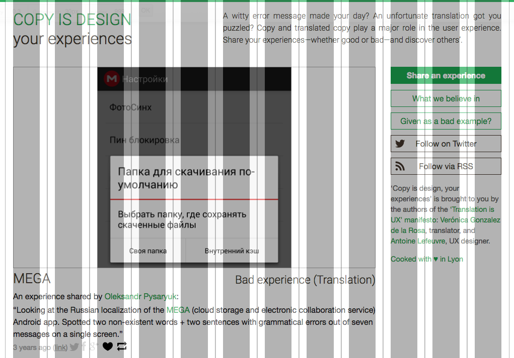
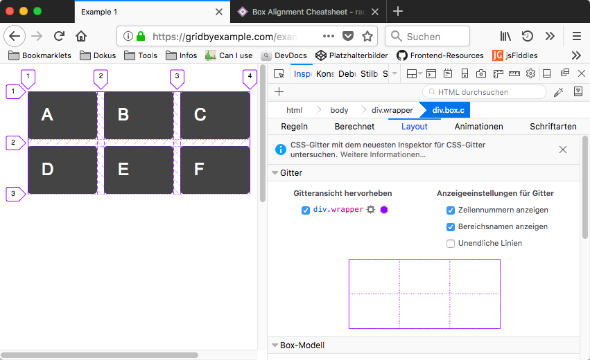
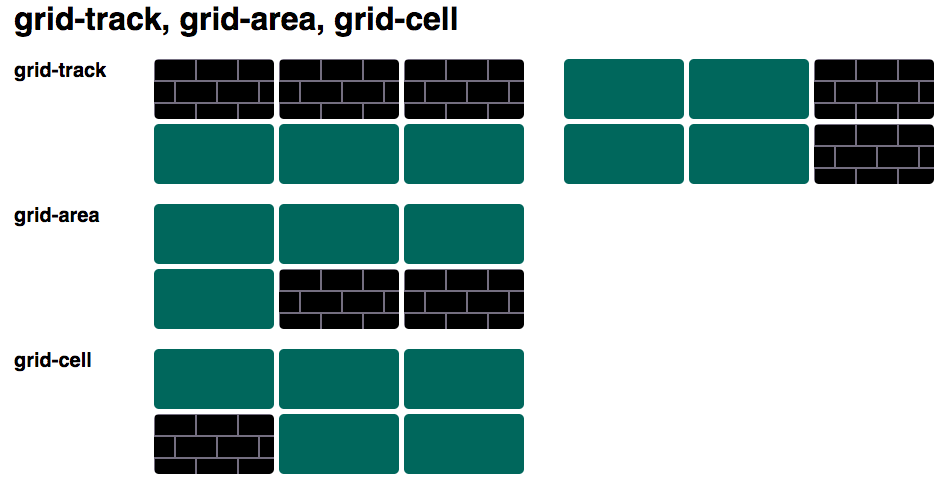
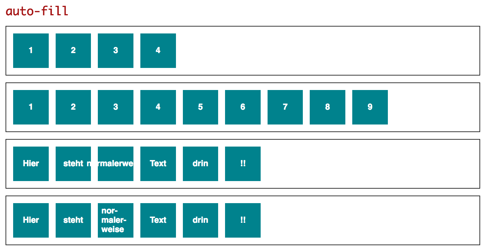
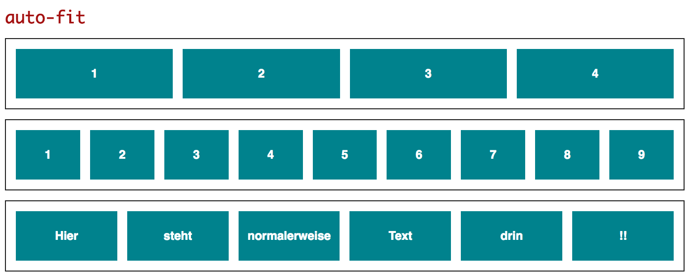
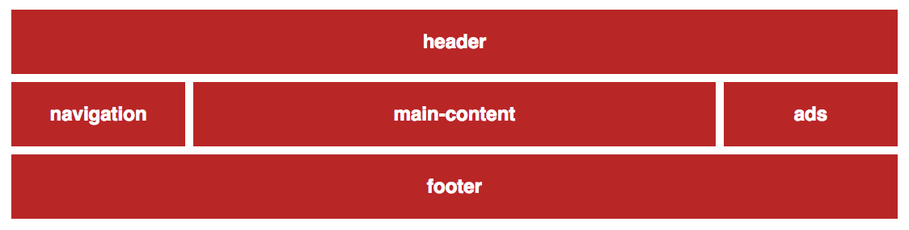
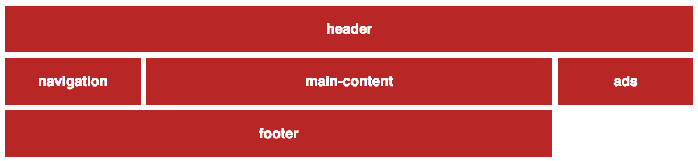
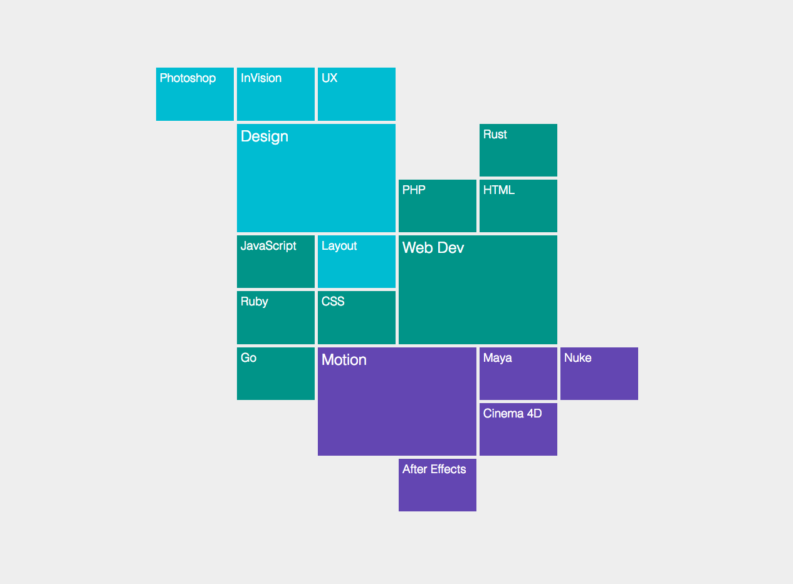
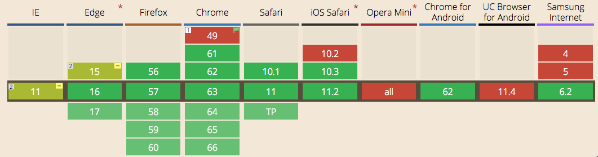

Erst seit Kurzem gibt es mit Flexbox ein erstes, echtes Layoutmodul in CSS. Bislang behalfen sich Webworker mit Techniken, die für Seitenlayouts nur bedingt geeignet und nie gedacht waren. Mit CSS-Grids wird nun sogar die zweite Layouttechnik von allen modernen Browsern unterstützt.
Der Begriff „Grid“ ist schon lange in der Frontend-Entwicklung bekannt. Er bezeichnet die Verteilung von Inhalten nach einem unsichtbaren Raster (engl.: grid, Abb. 1). Diese Verteilung wird bislang üblicherweise mittels Floats realisiert. Insbesondere das Grid von Bootstrap hat diesbezüglich Bekanntheit und eine große Nutzerschar erlangt.

Abb. 1: Die vertikalen, grauen Balken stellen das Grid dar, das im Hintergrund existiert. Die Inhalte werden
mittels Floats darauf platziert.
Floats waren niemals für Seitenlayouts vorgesehen. Sie werden nur mangels besserer Alternativen am Häufigsten genutzt. Alternativ kommen gelegentlich auch absolute Positionierung oder display: inline-block zum Einsatz. Als 2011 mit der Spezifikation von CSS-Grids begonnen wurde, hatten Webworker schon Erfahrungen mit teils komplizierten Layouts gemacht. Es waren auch Limitierungen der bislang verwendeten Techniken bekannt.
## Andere Herangehensweise
Wie schon bei Flexbox haben wir es bei CSS-Grids mit einer anderen als der gewohnten Herangehensweise und Benamung zu tun. Bislang waren wir es gewohnt, mit links, rechts, oben und unten zu arbeiten. Schon bei Flexbox wurde dieses Schema durch zwei Achsen ersetzt, die man in der Richtung drehen konnte.
Bei den CSS-Grids werden die einzelnen Layoutblöcke Grid-Items genannt. Der sie umgebende Container ist der Grid-Container. Das Grid wird durchzogen von Grid-Lines, also Linien, die die Grid-Items umgeben. Diese Linien werden im Grid-Inspector von Firefox (Teil der Developer Tools) visualisiert (Abb. 2)

Abb. 2: Sie müssen im Grid-Inspector erst auswählen, für welchen Grid-Container der Inspector die
Markierungen anzeigen soll.
Sie sehen in diesem Beispiel, dass die äußeren Enden des Grids immer mit Linien versehen sind. Es existieren deshalb immer eine Linie mehr als Reihen oder Spalten.
Im Gegensatz zu Flexbox, das richtungsagnostische Begriffe verwendet, wird bei Grids von Spalten und Reihen gesprochen, ganz wie bei Tabellen. Eine Reihe oder auch eine Spalte, also der Bereich zwischen zwei Grid-Lines, wird auch als Grid-Track bezeichnet. Die kleinste Einheit, vergleichbar mit einer Tabellenzelle, ist die Grid-Cell. Und ein Bereich aus einer oder mehrerer Grid-Zellen, die zusammen von vier Grid-Lines begrenzt werden, ist eine Grid-Area. Ein Grid-Item ist immer Teil einer Grid-Area.

Abb. 3: Die schwarzen Elemente symbolisieren die jeweiligen Begriffe.
Ein entscheidender Unterschied zwischen CSS-Grids und Flexbox ist, dass die Grids zweidimensional konstruiert sind. Eventuell macht die Spezifikation deshalb sprachliche Anleihen an Tabellen. Flexbox ist hingegen eindimensional. Um dies zu unterstreichen spricht die Spezifikation nur von Haupt- und Kreuzachse, nutzt also eine recht neutrale Sprache.
## Ein Grid erstellen
Durch die Zuweisung von display: grid; an den Grid-Container werden dessen direkte Kindelemente automatisch zu Grid-Items. Dieses Prinzip kennen Sie bestimmt schon von Flexbox. Zusätzlich wird die Art des Rasters am Grid-Container bestimmt. Sie müssen also noch die Breite und Anzahl der Spalten (grid-template-columns) und eventuelle Zwischenräume (grid-gap) definieren. Der Code für ein erstes Grid könnte folgendermassen aussehen:
```css
.grid-container {
display: grid;
grid-template-columns: 100px 100px 100px 100px;
grid-gap: 20px;
}
```
Den Code finden Sie auf [Codepen](cdpn.io/e/mpVjGQ). Durch `grid-template-columns` wurde ein vierspaltiges Layout definiert, dessen Spalten jeweils 100px breit sind. Mit jedem fünften Grid-Item wird eine neue visuelle Zeile eröffnet. Dafür müssen keine neuen Grid-Container erstellt werden. Sie werden erst dann notwendig, wenn sich die Art des Layouts ändert, also die Breiten und die Anzahl der Spalten. Um die Spalten nicht direkt aneinander kleben zu lassen, empfiehlt es sich, einen Abstand zwischen Spalten und Zeilen zu definieren. Mit grid-row-gap und `grid-column-gap` können Sie eine explizite Steuerung vornehmen. Einfacher ist es – wenn es das Layout gestattet, mit der Kurzschreibweise grid-gap. Damit können Sie den gleichen Abstand sowohl für die Spalten, als auch für die Zeilen definieren. Aber auch in der Kurzschreibweise können Sie unterschiedliche Werte transportieren. Der erste Wert bezieht sich auf die Zeilen, der zweite auf die Spalten:
```css
.grid-container {
grid-gap: 20px 10px;
}
```
Die äusseren Ränder des Grids werden dabei nicht in die Berechnung der grid-gaps einbezogen. Der Zwischenraum zwischen Spalten und Zeilen beginnt erst zwischen der ersten und zweiten Zeile bzw. Spalte und endet vor der jeweils letzten.
Im ersten Beispiel werden absolute Breiten genutzt. Diese sind selbstverständlich möglich, in Zeiten einer unübersichtlichen Endgerätevielfalt aber eher hinderlich. Für die Erstellung responsiver Layouts sind deshalb
relative Breitenangaben sinnvoller.
Mit dem Grid-Modul wird eine neue relative Einheit eingeführt: fraction (fr). Mittels „fraction“ wird der zur Verfügung stehende Platz aufgeteilt. Sie können sich dies wie die Portionierung eines Kuchens vorstellen. Eine genauere Betrachtung dieser neuen Einheit folgt im Anschluss an dieses Kapitel. Im folgenden Beispiel wird ein Grid-Container [in vier gleich große Stücke aufgeteilt](cdpn.io/e/WdrgJp):
```css
.grid-container {
display: grid;
grid-template-columns: 1fr 1fr 1fr 1fr;
grid-gap: 20px;
}
```
Selbstverständlich können Sie auch [Einheiten mischen](cdpn.io/e/VyeGxJ):
```css
.grid-container {
display: grid;
grid-template-columns: 200px 2fr 1.5fr 1fr;
grid-gap: 20px;
}
```
Solche Mischungen können bei Seitenlayouts sinnvoll sein, die Werbebanner beinhalten. Bannerformate sind üblicherweise nicht responsiv, sodass eine Werbespalte mit fixer Breite die richtige Lösung wäre.
Wenn Sie dem Grid-Container display: inline-grid; zuweisen, wird das Grid als Inline-Element erstellt. Es produziert also keinen Absatz um sich herum. Auch bei Flexbox gibt es eine Inline-Variante. Deren sinnvoller Einsatzzweck dürfte sich auf Suchformulare in Navigationsleisten beschränken.
Neben den Spalten können Sie selbstverständlich auch die Zeilen eines Layouts definieren:
```css
.grid-container {
display: grid;
grid-template-columns: 200px 2fr 1.5fr 1fr;
grid-template-rows: 150px 100px;
grid-gap: 20px;
}
```
In diesem Falle bekommen die ersten beiden möglichen visuellen Zeilen eine Höhe [cdpn.io/e/WdwRXB]. Die Höhe der weiteren Zeilen richtet sich dann nach dem höchsten Element in der Zeile.
Auch für grid-template-columns und grid-template-rows gibt es eine Kurzschreibweise, hier nur für die Spalten demonstriert:
```css
.grid-1 {
grid-template-columns: repeat(4, 1fr);
}
.grid-2 {
grid-template-columns: repeat(2, 1fr 2fr);
}
.grid-3 {
grid-template-columns: 150px repeat(3, 1fr);
}
```
Die repeat-Syntax ist denkbar einfach: Innerhalb des Klammerausdrucks wird erst die Anzahl der Wiederholungen notiert und danach, mit einem Komma getrennt, das zu wiederholende Muster. Bei .grid-1 werden vier gleich breite Spalten konstruiert. Bei .grid-2 werden zwei unterschiedlich breite Spalten konstruiert und diese einmal wiederholt. Und bei .grid-3 wird erst eine Spalte von 150px Breite konstruiert, danach folgen drei gleich breite Spalten [cdpn.io/e/ZvWaNp].
Sie können nun mit sehr wenig Code das Bootstrap-Grid (12 Spalten) nachbauen [cdpn.io/e/LeRPrK]:
Vier gleich große Spalten
## Die Einheit "Fraction"
Eine echte Neuerung im CSS-Grid-Modul ist die Einheit fraction. Sie ermöglicht die Verteilung von Inhalten auf den übrig gebliebenen Platz. Die Einheit funktioniert analog zu den Eigenschaften flex-grow und flex-shrink. Mit diesen Einheiten wird Flex-Items ein Hinweis gegeben, in welchem Verhältnis zueinander sie wachsen oder schrumpfen dürfen. Leider sind diese Werte ohne Einheit, ein Fehler in der Flexbox-Spezifikation, den das W3C heute zugibt. Im Gegensatz zu den Flexbox-Eigenschaften können Fractions auch Kommawerte enthalten. Jedenfalls haben Tests in Chrome und Firefox dies ergeben. Denn leider wird dies weder in der Spezifikation explizit erwähnt, noch sprechen die vielen Artikel darüber. Allerdings erscheinen ganzzahlige Werte sinnvoller und intuitiver.
Der große Vorteil der Einheit fr gegenüber Prozentwerten erschließt sich an einem einfachen Beispiel sehr schnell:
/* Erst einmal traditionell in Prozent */ .grid-prozent{ display: grid; grid-template-columns: 25% 25% 25% 25%; grid-gap: 20px; } /* Jetzt die neue Einheit */ .grid-fr{ display: grid; grid-template-columns: 1fr 1fr 1fr 1fr; grid-gap: 20px; }
Die Container sind in beiden Codebeispielen gleichmäßig in vier Spalten aufgeteilt. Störfaktor ist im Beispiel mit den Prozentwerden (.grid-prozent) allerdings die Einheit „grid-gap“. Sie definiert den horizontalen und vertikalen Abstand zwischen den Grid-Items. So kämen zu den 100% Spaltenbreite beim ersten Codebeispiel noch 30px Abstand zwischen den vier Spalten hinzu. Der Browser würde einen horizontalen Scrollbalken zeigen
Die Fraction-Einheit funktioniert hier anders. Der Browser schaut erst, welche Breiten (oder Höhen) fest vergeben sind und welcher Platz übrig bleibt. Diesen verbleibenden Platz verteilt der Browser dann nach dem Schlüssel, den der Webworker mit den fr-Einheiten vergibt. Im zweiten Beispiel (.grid-fr) würde der Browser erst einmal den Raum zwischen den Spalten von der Gesamtbreite abziehen. Den Rest würde der Browser gleichmäßig zu vier Teilen zwischen den Grid-Items verteilen. Selbstverständlich kann der Platz auch ungleich verteilt werden.
Das Beispiel mit den Prozentwerten müsste der Web-Autor mittels calc() folgendermassen korrigieren:
Breitenkorrektur mit calc()
Diese Vorgehensweise ist umständlich, schlecht lesbar und fehleranfällig. Schließlich muss der Webworker dran denken, dass die Grid-Items am Rand nur ein halbes grid-gap auf einer Seite besitzen, während alle anderen auf beiden Seiten jeweils ein halbes grid-gap haben. Deshalb werden von den beiden äusseren Grid-Items nur jeweils 10px abgezogen. Die 20px der inneren Container müssen Sie sich zu gleichen Teilen nach links und rechts verteilt vorstellen. Dann erkennen Sie, dass der rechte Abstand des ersten und der linke Abstand des zweiten Containers zusammen die als grid-gap definierten 20px ergeben.
Selbstverständlich kann die Einheit fr mit anderen Einheiten vermischt werden. Es geht schließlich hierbei in gewisserweise um „Resteverwertung“ [cdpn.io/e/vpKxNa].
Andere mögliche Breiten-Kombinationen
## minmax
Für flexible, responsive Layouts kann es manchmal wichtig sein, eine minimale und eine maximale Breite – respektive Höhe – angeben zu können. Bei der Grid-Spezifikation wurde daran gedacht und die Funktion minmax() eingeführt. Schauen wir uns zwei Beispiele an. Im ersten Beispiel bleibt die erste Spalte 150px breit, die dritte und vierte bekommen gleichermaßen eine Fraction vom Rest. Und die zweite Spalte soll mindestens 80px breit sein, darf aber maximal zwei Fractions breit werden:
Im Codepen-Beispiel können Sie mittels einfacher Buttons die Breite des Grids verändern [cdpn.io/e/jYrLyP]. Dabei sehen Sie dann, wie sich der zweite Container an die Gegebenheiten anpasst.
Grids können Sie auch in der Höhe flexibel begrenzen. Im entsprechenden Codepen-Beispiel ist einen Blindtext versteckt [cdpn.io/e/BJzwBj]. Durch Klick auf den Button können Sie ihn erscheinen und wieder verschwinden lassen. Die zweite Zeile verändert dadurch ihre Höhe. Die Bedingungen dafür sind folgendermaßen gesetzt:
Minimale und maximale Höhe
In der Funktion minmax() darf die Einheit fr nur als Maximalwert, nicht als Minimalwert eingesetzt werden. Schließlich ist „fr“ ein relativer Wert. Ein definitiver Minimalwert liesse sich damit nie erstellen. Zusätzlich gibt es noch die Schlüsselbegriffe auto, min-content und max-content. Mit min-content ist die Mindestbreite gemeint, die der Inhalt benötigt. Also bspw. eine Bildbreite oder das längste Wort in einem Text. Mit max-content ist dementsprechend das Maximum an für den Inhalt notwendigem Platz gemeint. Für den Maximalwert, also den zweiten Wert in der minmax()-Funktion, sind max-content und auto identisch. So ergeben sich folgende Varianten:
Schlüsselbegriffe bei minmax()
## Autofit und Autofill
Der erste Parameter der repeat()-Funktion ist die Anzahl der Wiederholungen des darauffolgenden Breiten-Musters. Anstatt einen konkreten Wert einzugeben, können Sie auch die Schlüsselworte auto-fit und auto-fill benutzen.
auto-fill und auto-fit im Einsatz
Mit dem Schlüsselwort auto-fill versucht der Browser, so viele Grid-Items wie möglich in eine visuelle Zeile zu bekommen. Er richtet sich danach an der angegebenen Minimalgröße aus. Eventuell frei bleibender Platz wird nicht gefüllt.

Abb. 4: Die auto-fill-Eigenschaft im Einsatz.
Auch bei auto-fit versucht der Browser, den Platz so gut es geht mit Grid-Items zu füllen. Hier bleibt kein freier Platz übrig [cdpn.io/e/xpOvmW].

Abb. 5: Die auto-fit-Eigenschaft im Einsatz.
## Areas definieren
Die einzelnen Zellen eines Grids können Webworker mit der Eigenschaft grid-template-areas benamen. Dabei können einfache Buchstaben genauso genommen werden wie ganze Wörter. Im folgenden Beispiel werden die Zellen eines 3x3-Rasters mit Namen versehen. Gleiche Namen sorgen dafür, dass die Zellen eine Grid Area bilden. Dabei müssen die Areas Rechtecke bilden. Die Eigenschaft grid-area ist nur die Kurzschreibform für grid-row-start, grid-row-end bzw. grid-column-start und grid-column-end. Die Orientierung hält sich also immer in einer visuellen Zeile oder Spalte. Deshalb ist es leider nicht möglich, ein Grid-Item in einer L-Form innerhalb eines Grids zu platzieren.
Diese Eigenschaften werden übrigens vom IE nicht unterstützt, egal ob nun benamt oder ohne expliziten Namen.
Benannte Bereiche (areas)
Nachdem die Bereiche des Grids benannt worden sind, müssen diese noch mit Inhalten befüllt werden. Dazu können Sie Ihre Inhalte nun bequem anhand der Namen der Areas verteilen.
Den Inhalten die Grid-Areas zuweisen

Abb. 6: Die Inhalte sind den passenden Grid-Areas zugewiesen.
Der charmante Nebeneffekt dieser Technik ist, dass die Darstellung unabhängig von der Codereihenfolge ist. Der Browser weiß schließlich, welche Container in welchen Bereich des Grids sollen. Dies ist besonders praktisch für unterschiedliche Breakpoints einer responsiven Seite [cdpn.io/e/GyjpMM].
Beachten Sie, dass die Anzahl der Namen mit der Anzahl der zur Verfügung stehenden Grid-Items pro visueller Zeile übereinstimmen muss. Eventuell gewünschte Auslassungen werden mit einem Punkt realisiert:
Auslassung einer Zelle

Abb. 7: Die rechte Zelle des Fusses wurde ausgelassen.
Der kreative Umgang mit benamten Grid-Areas kann zu interessanten Layoutlösungen führen [cdpn.io/e/EgNXyo]:

Abb. 8: Eine interessante Navigationsidee dank CSS-Grids.
Der dahinter stehende Code ist gekürzt folgender:
Der Autor markiert die Auslassungen in diesem Beispiel mit zwei Punkten. Auf diese Weise können Sie sehr einfach einen Container über mehrere Spalten und Zeilen verteilen sowie mit Auslassungen gestalten. Auslassungen werden mit mindestens einem Punkt gekennzeichnet. Wenn Sie aus optischen Gründen mehrere Punkte nutzen möchten, können Sie dies tun, solange kein Lerraum zwischen den Punkten ist. Ein Leerschritt würde den Übergang in eine neue Zelle markieren.
## Browser-Support
Die wohl spannendsten Fragen im Zusammenhang mit jeder neuen Technik sind die nach der Unterstützung in modernen Browsern und die nach dem Umgang mit den alten Browsern. Denn schließlich erhalten die IT-Abteilungen großer Konzerne und Behörden (aber auch viele kleine Mittelständler) alte Internet Explorer am Leben. Oder sie nutzen einen speziellen Firefox, der nur jedes vierte Release mitmacht und ein Update bekommt.
Anfang 2017 haben zuerst Mozilla, das Blink-Projekt (Chrome, Opera, Vivaldi) und das Webkit-Projekt (Safari) CSS-Grids in ihre Browser integriert. Kurze Zeit später zog Microsoft mit Edge nach. Eine ältere Version der Grids existiert auch im Internet Explorer ab Version 10 und in Edge bis einschliesslich Version 15, sodass auch alle halbwegs modernen Browser mit CSS-Grids umgehen können. Allerdings unterstützen die Internet Explorer nicht alle aktuellen Eigenschaften. Grid-Areas gibt es im IE10 und IE11 leider nicht. Alle anderen Eigenschaften haben ein „-ms-“-Prefix. Manche werden komplett anders geschrieben. Den Umgang mit allen Unterschieden müssen Sie nicht komplett manuell pflegen. Das beliebte Tool „Autoprefixer“ [goo.gl/TLpWr8] hilft Ihnen dabei. Sie müssen die CSS-Grids allerdings in der Konfiguration aktivieren:
autoprefixer({grid:true})
Doch mit Autoprefixer allein ist uns beim Umgang mit dem IE nicht geholfen. Rachel Andrew führt in einer Tabelle alle Grid-Eigenschaften und ihre möglichen IE-spezifischen Pendants auf [goo.gl/RGDTLj]. Dabei fällt auf, dass viele aktuelle Eigenschaften keine Entsprechung in der alten Version haben und andere wiederum so gelöst werden, dass Autoprefixer leider keine Hilfe ist. Wenn Sie ein einfaches Grid-Layout erstellen, ist die Chance hoch, dass Sie es auch für den IE zum Laufen bekommen. Im Extremfall erstellen Sie ein Float-Layout für Nicht-Grid-Browser, ein einfaches Grid für den IE und ein ausgefeiltes Grid für alle modernen Browser. Es hört sich schlimmer an, als es am Ende sein wird.
Abseits des guten alten IE: der UC Browser - ein mobiler Browser, der vor allem auf schwachen Endgeräten in Indien oder Afrika zum Einsatz kommt – unterstützt Grids auch in der aktuellen Version nicht. Es liegt also an Ihren Projekten, ob Sie ohne Gewissensbisse mit der neuen Technik arbeiten können. Ein Blick in die eigene Statistik lohnt immer.

Abb. 9: Can I Use gibt hoffnungsvolle Signale.
## Progressive Enhancement
Es gibt keinen Polyfill für CSS-Grids und wird wohl auch nie einen geben. Es kann also kein Ziel sein, optisch das gleiche Ergebnis für alte Browser zu servieren. Im Geiste von Progressive Enhancement oder Graceful Degredation können Sie entweder auf eine bestehende Layoutlösung die neue Technik draufsetzen, um für moderne Browser eine leicht andere Experience zu schaffen. Oder Sie geben allen Nicht-Könnern ein linearisiertes Layout. Das Gute an CSS ist ja, dass Browser ihnen unbekannte Eigenschaften einfach ignorieren, anstatt die Verarbeitung wie bei JavaScript mit einem Fehler abzubrechen.
Nutzen Sie neue Techniken wie CSS-Grid oder auch Flexbox, so ignorieren die modernen Browser mögliche alte Lösungen wie Floats, display: table-cell oder display: inline-block einfach. Sie können also schlicht ein bestehendes Layout mit CSS-Grids erweitern [cdpn.io/e/JMRwBO]. Sie werden sehen, dass weder eine Änderung in der Codereihenfolge (die Kaskade) noch eine Erhöhung der Spezifität etwas daran ändern kann, dass der CSS-Grid-fähige Browser die Floats ignoriert.
## Feature Queries
In einigen Artikeln wird die Verwendung von Feature Queries zur Unterstützung von CSS-Grid diskutiert. Während Media Queries Umgebungsvariablen des Browsers wie die Breite oder Höhe des Viewports oder die Farbtiefe des Monitors abfragen, fragen Feature Queries die Unterstützung von Eigenschaften durch einen Browser ab. Sie können also folgendermaßen vorgehen:
.container{ /* Regeln für eine Floatumgebung für alte Browser */ } @supports(display: grid){ .container{ display: grid; } /* Und viele weitere Regeln ... */ }
Durch die Feature Query wären die Internet Explorer ausgegrenzt, denn zum einen benötigen display: -ms-grid diese als Eigenschaft. Und zum anderen verstehen sie die Technik der Feature Queries nicht. Eine Nutzung von @supports macht also nur Sinn, wenn neben der reinen Definition der Grids noch zusätzliche Eigenschaften modifiziert werden müssten, die Nicht-Grid-Browser auch interpretieren würden.
Nehmen wir an, der Grid-Container bekommt einen hohen Innenabstand von 40px, während eine alternative Float-Umgebung keinen Innenabstand hätte. Da die Eigenschaft „padding“ von jedem Browser interpretiert wird, wäre dies ein sinnvoller Anwendungsfall für eine Feature Query.
## Zweidimensional
Sie stellen sich möglicherweise die Frage, ob nicht der Einsatz von Flexbox vollkommen ausreichend ist. Der Komplexitätsgrad von CSS-Grid wirkt schon innerhalb dieses Artikels recht groß, ist aber in Wahrheit noch viel größer.
Der große Unterschied von CSS-Grids zu Floats und dem ebenfalls recht neuen Flexbox ist, dass CSS-Grids zwei-dimensional agieren können. Floats funktionieren nur horizontal, Flexbox nur horizontal oder vertikal. Bei den CSS-Grids können die Grid-Items horizontal und vertikal verteilt werden:
Zwei-Dimensionale Verteilung mit CSS-Grids
Im obigen Beispiel wird ein Grid-Item horizontal als „header“ und ein anderes als „footer“ verteilt. In der gleichen Regel wird ein weiteres Element vertikal als „sidebar“ ausgerichtet. Diese Flexibilität innerhalb einer Regel bietet keine andere Technik.
Bei der Arbeit mit Flexbox müssen Sie sich immer für eine Hauptrichtung entscheiden. Innerhalb dieser werden Ihre Flex-Items ausgerichtet. Im folgenden Beispiel werden die direkten Kindelemente des Elements mit der Klasse .flex-container horizontal ausgerichtet, es ist die Standardrichtung:
.flexbox-container{ display: flex; }
Sie können dafür sorgen, dass Flex-Items, die nicht mehr in eine visuelle Zeile passen, in eine neue rutschen. Sie können aber nicht dafür sorgen, dass diese neue Zeile eine abweichende Höhe hat. Sie haben keine Kontrolle über die implizit entstehenden neuen Zeilen. Bei CSS-Grids haben Sie diese Kontrolle.
Durch die Hinzugabe der Eigenschaft flex-direction: column; würden die Flex-Items des obigen Beispiels nicht mehr horizontal, sondern vertikal laufen. Sie müssen zwischen beiden Optionen wählen. Bei CSS-Grids müssen Sie dies nicht. Sie können die einen Elemente horizontal, die anderen vertikal ausrichten. Und dafür benötigen Sie zudem weniger HTML. Denn da Flexbox nur in eine Richtung funktioniert, benötigen Sie zur Kombination beider Richtungen einen extra Wrapper, wie Sie an einem einfach gehaltenen Layoutbeispiel [cdpn.io/e/GQgMdo] sehen können. In der CSS-Grid-Variante [cdpn.io/e/jZEaQJ] wird der Wrapper nicht benötigt. Die grobe Struktur beider Varianten sieht folgendermaßen aus:
<!-- Die CSS-Grid-Variante --> <divclass="container"> <headerclass="page-header"></header> <mainclass="main"></main> <asideclass="sidebar"></aside> <footerclass="page-footer"></footer> </div>
Struktur einer einfachen Seite im Vergleich: Flexbox und CSS-Grid
Der Browser berechnet bei Flexbox primär in eine Richtung – horizontal oder vertikal. Bei CSS-Grids hingegen rechnet er in zwei Richtungen – horizontal und vertikal. Deshalb sind mit CSS-Grids komplexere Layouts einfacher möglich. Flexbox spielt seine Stärken in einzelnen Modulen aus, also quasi für Mikro-Layout, wohingegen CSS-Grids für Seitenlayouts geschaffen wurden.
Sie sollten eine Navigation mit Flexbox realisieren, nicht mit CSS-Grids. Und vergessen Sie bitte nicht die alten, traditionellen Techniken, die trotz dieser beiden neuen Techniken noch immer ihre Berechtigung haben. Wenn Ihre Navigation mit display: inline-block oder Floats wunderbar und ohne Nachteile funktioniert, gibt es keinen vernünftigen Grund, auf eine andere Technik umzusteigen. Diese lohnt nur, wenn Sie einen Vorteil bekommen. Sie sollten dann Flexbox und CSS-Grids als Progressive Enhancement nutzen. Dadurch liefern Sie immer ein angenehmes Layout aus, das sich allerdings im Detail unterscheiden kann.
Es ist zudem ein Irrtum, dass CSS-Grids alle anderen Techniken ersetzen. Jede Technik hat ihre Berechtigung, ihre Vor- und Nachteile. CSS-Grids füllen eine Lücke, die vorher nur mit Müh und Not mit Hilfe von dazu nicht primär nicht gedachten Techniken gestopft wurde. Grids können in sehr vielen Situationen ihre Stärken ausspielen. Aber sie sind nicht allmächtig. Die beliebten Masonry-Layouts, die Inhalte – meist Bilder – vertikal anordnen und automatisch in eine neue Spalte verschieben, sind nicht mit CSS-Grids realisierbar [goo.gl/ezVNXT]. Die inneren Mechanismen der Grids stehen dagegen.
## Informationsquellen
CSS-Grids sind eine umfangreiche und teilweise kompliziert zu erfassende Technik. Vertiefende und erweiternde Informationen bekommen Sie an vielen Ecken des Internets, sowohl als einzelne Artikel, komplette Infoseiten und als Videotutorials unterschiedlicher Komplexität.
Die Seite „Grid by Example“ von Rachel Andrew sollte Ihre erste Anlaufstation sein [gridbyexample.com]. In kurzen Artikeln mit eingebetteten Codepen-Beispielen und Links zur W3C-Spezifikation führt sie ins Thema ein. Wer mag, kann sich die einzelnen Themen auch in kleinen Videotutorials anschauen. Zusätzlich gibt es eine Vielzahl fertiger Beispiele, anhand derer Sie selbst mit der neuen Technik experimentieren können.
Rachel Andrew ist auch mit verantwortlich für die umfangreiche Abhandlung im Mozilla Developer Network [goo.gl/FRFW8s], die teilweise in deutscher Übersetzung vorliegt. Sehr empfehlenswert ist auch der Abschnitt über CSS-Grids in der CSS-Referenz von Codrops [goo.gl/wczTww].
Lernen Sie gerne mit Videotutorials? Dann sind die 25 Lektionen von Wes Bos sicher eine gute Empfehlung. Der Kanadier hat – von Mozilla finanziert – seinen kostenlosen und umfangreichen Kurs erst Anfang 2018 veröffentlicht [cssgrid.io]. Konkrete praktische Fragen geht Jen Simmons in ihrer Videocast-Serie „Layoutland“ auf Youtube an [goo.gl/Bw5DAq].
## Fazit
Endlich gibt es eine ausgefeilte Technik für Seitenlayouts. Und das Beste ist, dass die Browserhersteller diese Technik in ihre aktuellen Versionen integriert haben. Im Gegensatz zu früher haben wir keine unterschiedlichen Versionen mit Vendor-Prefixes wie -webkit- und -moz-. Glücklicherweise ist die neue Technik so in die Browser integriert, dass sie alte Layoutlösungen einfach überschreibt. Sie können also in ihren aktuellen Projekten schon anfangen, für moderne Browser mit der neuen Technik zu experimentieren. Die älteren oder feature-armen Browser müssen darunter nicht leiden. Deren Nutzer werden nicht wissen, was sie verpassen. Viel Spaß bei der Gestaltung der Zukunft!